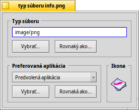
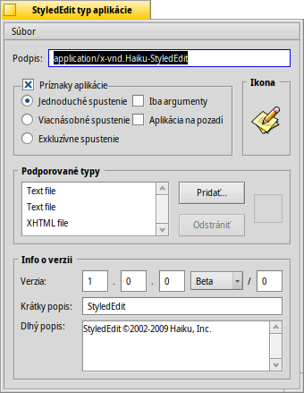

Slovenčina
Slovenčina Français
Français Deutsch
Deutsch Italiano
Italiano Русский
Русский Español
Español Svenska
Svenska 日本語
日本語 Українська
Українська 中文 ［中文］
中文 ［中文］ Português
Português Suomi
Suomi Magyar
Magyar Português (Brazil)
Português (Brazil) English
EnglishTypy súborov
Na rozdiel od Windows, Haiku sa nespolieha na trojpísmenovú príponu názvu súboru (napr. .txt, .jpg, .mp3) pri určovaní jeho typu. Táto metóda sa používa iba ako posledné východisko. Haiku používa typy MIME presne tak, ako je zvykom na internete.
 Nastavenie typu konkrétneho súboru
Nastavenie typu konkrétneho súboru
Môžete zmeniť typ konkrétneho súboru, jeho ikonu a súvisiacu aplikáciu. Vyberte súbor a spustite z kontextového menu vyvolaného kliknutím pravým tlačidlom myši.

Typ súboru
Hore je uvedený súbor PNG, jeho MIME reťazec je image/png. Povedzme, že ste si istý, že súbor nie je PNG, ale GIF. To môžete zmeniť buď zadaním správneho MIME reťazca manuálne, alebo jedným z tlačidiel pod textovým poľom:
| zobrazí hierarchický zoznam typov súborov, odkiaľ vyberiete image | GIF Image. | ||
| otvorí súborový dialóg, z ktorého si vyberiete súbor s hľadaným typom súboru. |
Preferovaná aplikácia
Toto rozbaľovacie menu zobrazí zoznam všetkých aplikácií, ktoré dokážu pracovať s daným typom súboru. Tu si vyberiete, ktorý program má otvoriť konkrétny súbor po dvojkliknutí naň. Napríklad by ste mohli zmeniť preferovanú aplikáciu súboru HTML z prehliadača na textový editor, pokiaľ na ňom pracujete. Každý iný súbor HTML bude napriek tomu preferovane otvorený v prehliadači, iba tento konkrétny sa spustí v textovom editore.
je tá, ktorá je globálne nastavená pre daný typ súboru. Ak vami žiadaný program v rozbaľovacom menu nenájdete, znova sú tu tlačidlá a , ktoré fungujú tak, ako sú popísané v časti „Typ súboru“ vyššie.
Ikona
Ak ste premýšľali prečo je pole ikony vpravo hore prázdne: Ikony sa normálne dedia od systémovo predvolených pre daný typ súboru. Môžete otvoriť doplnok FileType nejakého súboru, ktorý obsahuje ikonu a tú myšou pretiahnuť do poľa ikony. Alebo na pole dvojkliknúť a vytvoriť alebo upraviť vašu vlastnú ikonu. Viac informácií o ikonách a o tom, ako ich vytvárať, nájdete v sekcii Icon-O-Matic.
Špeciálne nastavenia aplikácií
Ak spustíte doplnok FileType na spustiteľnom súbore (tu: StyledEdit), zobrazí sa vám iné okno:
Navrchu, namiesto štandardného MIME reťazca, uvidíte jedinečný podpis aplikácie. Pomocou neho dokáže systém nájsť program nezávisle na tom, kde je nainštalovaný.
Pod tým nájdete viaceré príznaky, ktoré ovládajú správanie aplikácie:
| Každý spustiteľný súbor môže mať iba jednu bežiacu inštanciu. Ak máte ale dve kópie danej aplikácie, môžu bežať naraz. | ||
| Aplikácia môže mať viac spustených inštancií. | ||
| Skutočne môže bežať iba jedna inštancia aplikácie s daným podpisom. | ||
| Indikuje, že aplikácia nereaguje na správy. | ||
| Aplikácia nebude zobrazená v Twitcheri a v zozname bežiacich aplikácií v Paneli. |
Ďalej je tu zoznam podporovaných typov súborov. Môžete pridávať (a odstraňovať) typy súborov ak si myslíte, že s nimi aplikácia dokáže pracovať. Ako dôsledok sa táto aplikácia zobrazí v menu preferovaných aplikácií alebo v kontextovom menu Trackera keď pravým tlačidlom kliknete na vybraný typ súboru.
V dolnej časti je uvedená verzia programu a informácie o autorských právach. Tak, ako podpis aplikácie, sú vyplnené autorom aplikácie a nemali by ste do nich zasahovať.
Globálne nastavenia v Nastaveniach Typov súborov
Nastavenia Typov súborov sa nezaoberajú jednotlivými súbormi, ale globálnymi nastaveniami typov súborov. Môžete meniť predvolené ikony a preferované aplikácie alebo pridávať, odoberať alebo meniť atribúty typov súborov. Dokonca môžete vytvoriť váš vlastný typ súboru.
Všetky typy súborov a ich konfigurácie sú uložené v /boot/home/config/settings/beos_mime/. Predtým, než začnete experimentovať, bolo by rozumné zálohovať si daný priečinok...
Ďalšie informácie o typoch súborov sa dozviete vo workshope: Typy súborov, atribúty, index a požiadavky.